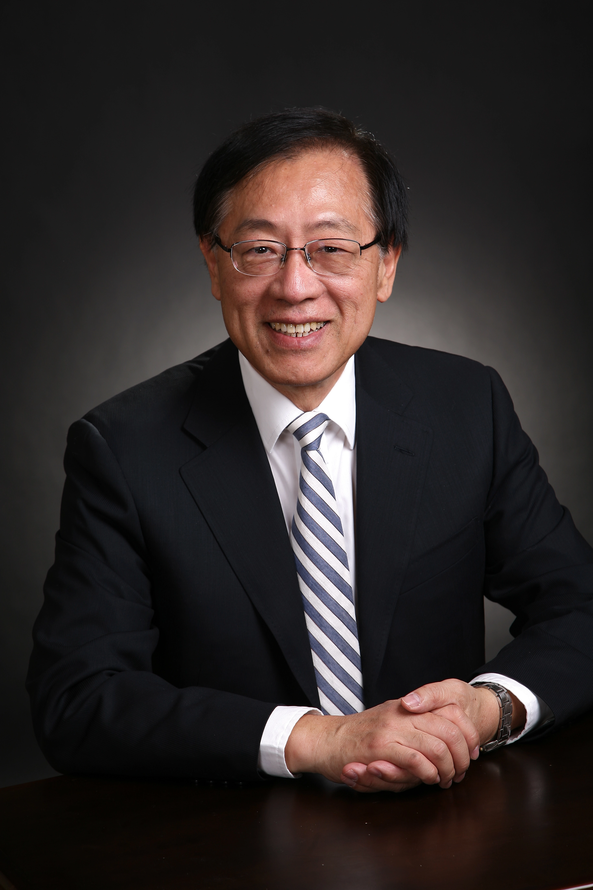

| 银碗？ |
首页 | 图灵 | 图灵奖 | 图灵奖历届得主 | 参考文献 | 返回寝室主页 |
|---|
|  |
姚期智，世界著名计算机学家，2000年图灵奖得主，中国科学院院士，美国科学院外籍院士，美国科学与艺术学院外籍院士，国际密码协会会士，清华大学交叉信息研究院院长，“清华学堂计算机科学实验班”“清华学堂人工智能班”首席教授，973项目首席科学家。 姚期智1967年获台湾大学物理学学士学位，1972年获哈佛大学物理学博士学位，1975年获伊利诺伊大学计算机科学博士学位。 1975年至1986年，分别在麻省理工学院、斯坦福大学、加州大学伯克利分校任教授； 1986年至2004年6月担任普林斯顿大学William and Edna Macaleer工程与应用科学系教授 ；2004年离开普林斯顿大学出任清华大学计算机科学专业教授，在清华先后创办计算机科学实验班、理论计算机科学研究中心等等 姚期智的研究方向包括计算理论及其在密码学和量子计算中的应用，在三大方面具有突出贡献：（1）创建理论计算机科学重要次领域：通讯复杂性和伪随机数生成计算理论；（2）奠定现代密码学基础，在基于复杂性的密码学和安全形式化方法方面有根本性贡献；（3）解决线路复杂性、计算几何、数据结构及量子计算等领域的开放性问题。他是研究量子计算与通讯的国际前驱，于1993年最先提出量子通信复杂性，基本上完成了量子计算机理论基础。1995年姚教授提出分布式量子计算模式，后来成为分布式量子算法的基础。 2000年，对计算理论包括伪随机数生成、密码学与通信复杂度的突出贡献使姚教授荣膺图灵奖（A.M. Turing Award），成为图灵奖创立以来首位获奖的亚裔学者，也是迄今为止获此殊荣的唯一华裔计算机科学家。姚教授还获得了诸多荣誉和奖项，其中包括1987年的波里亚奖（George Polya Prize）和1996年的高德纳奖（Donald E. Knuth Prize）等。 2003及2004年，姚期智教授先后获香港城市大学和香港科技大学荣誉博士学位，2006年获香港中文大学荣誉理学博士学位，2009年获滑铁卢大学荣誉博士学位，2012年获澳门大学理学荣誉博士学位。 2010年2月姚期智先生当选"2009首都十大教育新闻人物"。2014年获颁"功勋外教奖"。2005年及2014年获得"高等教育国家级教学成果一等奖"。 图灵奖，美国计算机学会于1966年创立，以计算机概念的创始人图灵的名字命名，每年评选出一至三名获奖者，是世界计算机科学领域的最高奖项，与物理、化学、医学、经济学领域的诺贝尔奖齐名。姚期智是迄今为止获得此项殊荣的唯一华裔计算机科学家。 |
|---|